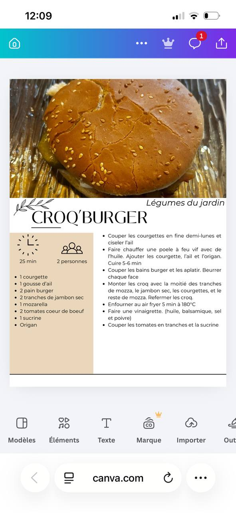

← Recettes
Croq'Burger
🌿 Légumes du jardin
⚡ Rapide
⏱️ 25 min
👥 2 pers.
🍽️ Plat
Ingrédients
- 1 courgette
- 1 gousse d'ail
- 2 pains burger
- 2 tranches de jambon sec
- 1 mozzarella
- 2 tomates cœur de bœuf
- 1 sucrine
- Origan
Préparation
-
1Couper les courgettes en fine demi-lunes et ciseler l'ail
-
2Faire chauffer une poêle à feu vif avec de l'huile. Ajouter les courgettes, l'ail et l'origan. Cuire 5-6 min
-
3Couper les pains burger et les aplatir. Beurrer chaque face
-
4Monter les croq' avec la moitié des tranches de mozza, le jambon sec, les courgettes, et le reste de mozza. Refermer les croq'
-
5Enfourner au air fryer 5 min à 180°C
-
6Faire une vinaigrette (huile, balsamique, sel et poivre). Couper les tomates en tranches et la sucrine
